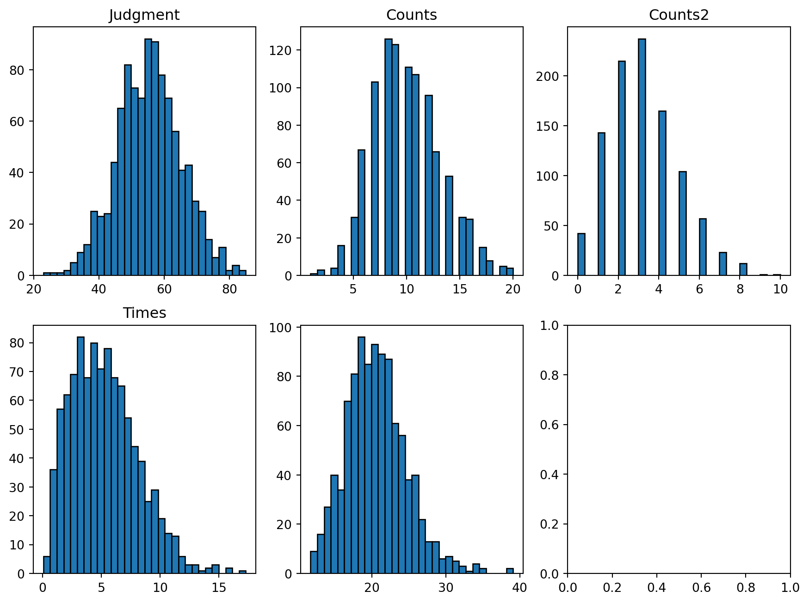
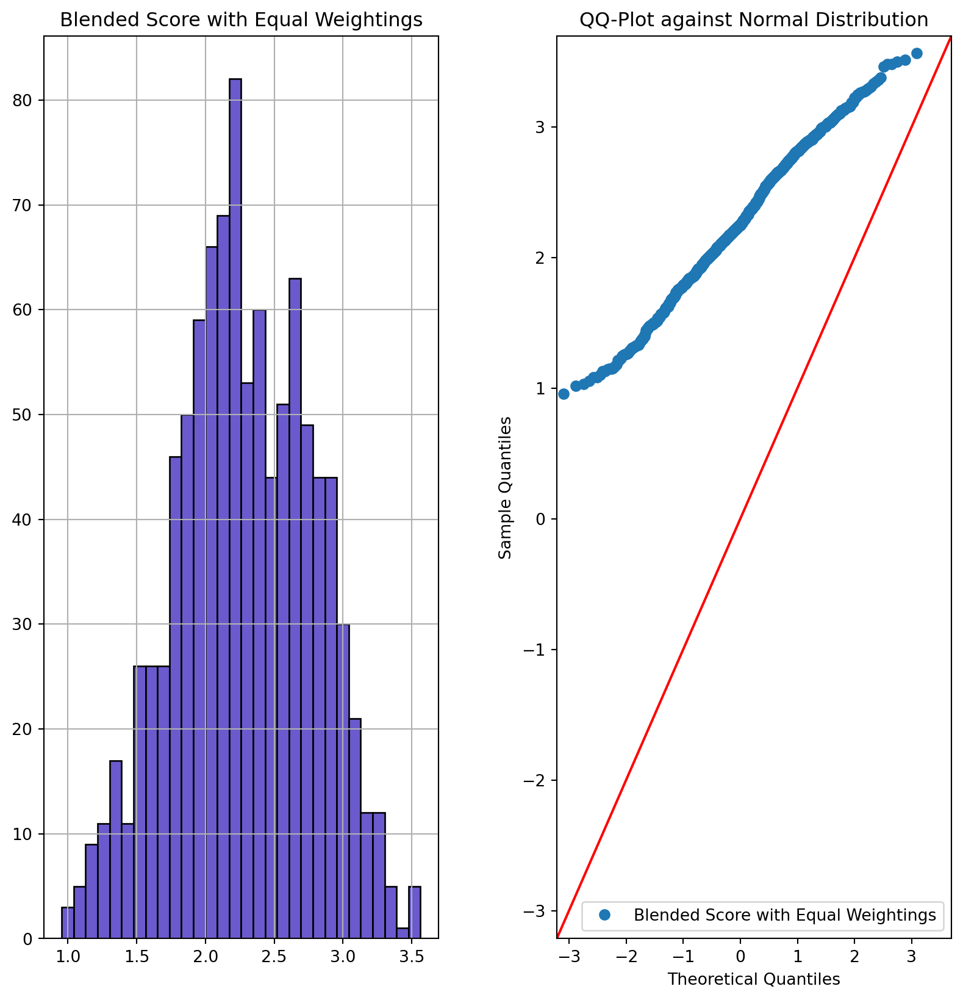
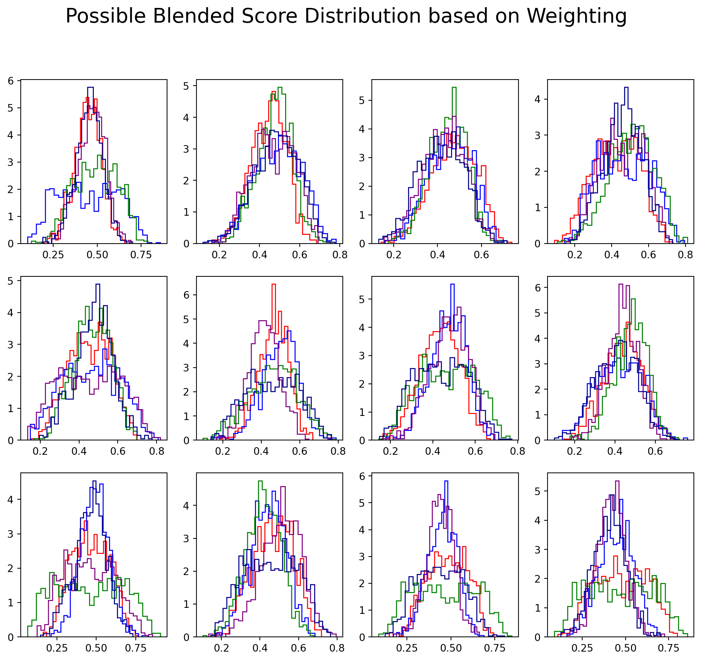

import numpy as np
from scipy.stats import norm, poisson, weibull_min, uniform, binom, dirichlet, nbinom, lognorm
import matplotlib.pyplot as plt
import statsmodels.api as sm
import pandas as pdjudgment_dist = norm(55, 10)
judgements = judgment_dist.rvs(1000)
counts_dist = poisson(10)
counts = counts_dist.rvs(1000)
counts_dist_2 = poisson(3)
counts_2 = counts_dist_2.rvs(1000)
time_dist = weibull_min(c=2, scale=6)
times = time_dist.rvs(1000)
time_dist_2 = lognorm(scale=np.exp(3), s=.2)
times_2 = time_dist_2.rvs(1000)
tickets_dist = uniform(10, 20)
fig, axs = plt.subplots(2, 3, figsize=(11, 8))
axs = axs.flatten()
axs[0].hist(judgements, bins=30, ec='black')
axs[1].hist(counts, bins=30, ec='black')
axs[2].hist(counts_2, bins=30, ec='black')
axs[3].hist(times, bins=30, ec='black')
axs[4].hist(times_2, bins=30, ec='black')
axs[0].set_title("Judgment")
axs[1].set_title("Counts")
axs[2].set_title("Counts2")
axs[3].set_title("Times")Text(0.5, 1.0, 'Times')
def draw_performance_metrics(individual):
tickets = int(tickets_dist.rvs(1))
t = time_dist.rvs(tickets)
t_2 = time_dist_2.rvs(tickets)
c = counts_dist.rvs(tickets)
c_2 = counts_dist_2.rvs(tickets)
j = judgment_dist.rvs(tickets)
return pd.DataFrame({'times':t, 'times_2': t_2, 'counts':c, 'counts_2': c_2, 'judgements':j, 'individual': individual, 'ticket': range(tickets)})
def build_annual_record(n_employees):
temp =[draw_performance_metrics(i) for i in range(n_employees)]
return pd.concat(temp)
flat_weights_prior = dirichlet([1, 1, 1, 1, 1])
def evaluate_blended_score(df, weights):
agg = df.groupby('individual').agg({'times': 'median', 'times_2': 'median', 'counts': 'sum', 'counts_2': 'sum', 'judgements': 'mean'})
normalized_agg=(agg-agg.min())/(agg.max()-agg.min())
normalized_agg['blended_score'] = np.sum(normalized_agg*weights, axis=1)
return normalized_agg
df = build_annual_record(1000)
df| times | times_2 | counts | counts_2 | judgements | individual | ticket | |
|---|---|---|---|---|---|---|---|
| 0 | 8.742200 | 21.118422 | 13 | 4 | 51.719896 | 0 | 0 |
| 1 | 8.431408 | 12.491945 | 7 | 3 | 32.867487 | 0 | 1 |
| 2 | 10.298069 | 20.968460 | 10 | 0 | 50.976824 | 0 | 2 |
| 3 | 4.203327 | 18.981406 | 12 | 4 | 38.438247 | 0 | 3 |
| 4 | 1.868801 | 20.694271 | 10 | 1 | 49.322960 | 0 | 4 |
| ... | ... | ... | ... | ... | ... | ... | ... |
| 12 | 2.170379 | 18.931220 | 3 | 3 | 57.808118 | 999 | 12 |
| 13 | 4.103774 | 17.018718 | 16 | 3 | 65.269198 | 999 | 13 |
| 14 | 9.436688 | 22.026417 | 16 | 0 | 58.516247 | 999 | 14 |
| 15 | 4.967280 | 28.744555 | 12 | 1 | 27.041492 | 999 | 15 |
| 16 | 3.280146 | 20.125687 | 14 | 1 | 54.749359 | 999 | 16 |
19162 rows × 7 columns
blended = evaluate_blended_score(df, np.array([1, 1, 1, 1, 1]))
fig, axs = plt.subplots(1, 2, figsize=(10, 10))
blended[['blended_score']].hist(bins=30, ec='black', color='slateblue', ax=axs[0])
sm.qqplot(blended['blended_score'], line ='45', ax=axs[1], label='Blended Score with Equal Weightings', color='slateblue')
axs[0].set_title('Blended Score with Equal Weightings')
axs[1].legend()
axs[1].set_title("QQ-Plot against Normal Distribution")/Users/nathanielforde/mambaforge/envs/pymc_ex_nf/lib/python3.9/site-packages/statsmodels/graphics/gofplots.py:1045: UserWarning: color is redundantly defined by the 'color' keyword argument and the fmt string "b" (-> color=(0.0, 0.0, 1.0, 1)). The keyword argument will take precedence.
ax.plot(x, y, fmt, **plot_style)Text(0.5, 1.0, 'QQ-Plot against Normal Distribution')
df = build_annual_record(1000)
fig, axs = plt.subplots(3, 4, figsize=(12, 10))
axs = axs.flatten()
for ax in axs:
for c, i in zip(['red', 'blue', 'green', 'purple', 'darkblue'], range(5)):
random_weights = flat_weights_prior.rvs(1)
blended = evaluate_blended_score(df, random_weights)
ax.hist(blended['blended_score'], bins=30, alpha=1, color=c, histtype='step', density=True)
plt.suptitle("Possible Blended Score Distribution based on Weighting", fontsize=20)Text(0.5, 0.98, 'Possible Blended Score Distribution based on Weighting')